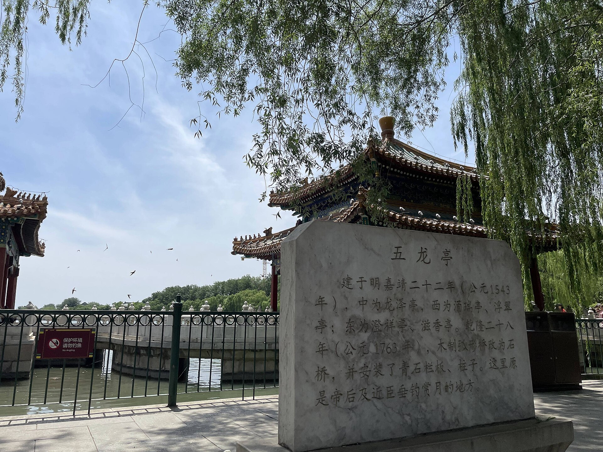

第 4 章
楼燕之年
初夏傍晚七点，前门箭楼的琉璃瓦在夕阳里泛着暗绿色的光。第一批雨燕从正阳门方向飞过来，起初只是几个黑点，很快变成几十个、上百个，在箭楼周围的天空里高速穿插，伴随着持续不断的尖啸声——

那种声音不像鸟鸣，更像刀刃划过玻璃，尖锐、急促，带着某种急迫感。
它们飞得太快了。每秒三十米以上的速度让肉眼很难追踪单一个体，只能看见一道道黑色弧线在箭楼的飞檐和斗拱之间反复切割天空。有时一只雨燕贴着瓦脊不到半米掠过，翅膀几乎擦到瓦当的边沿；有时三五只编队从箭窗上方俯冲下来，在即将撞到地面的瞬间拉起，重新射入高空。整个箭楼仿佛被这些飞行的弧线编织进了一张看不见的网里。
这是北京六月最常见的景象之一。每年四月中旬到七月下旬，成千上万的普通雨燕——北京人更习惯叫它们“楼燕”——聚集在故宫、天坛、前门、雍和宫这些古建筑的周围，在木构的缝隙间筑巢繁殖，在琉璃瓦上空捕食飞行昆虫。
它们来得准时，走得也准时，七月底雏鸟出飞后，成年雨燕便带着幼鸟陆续离开，飞向非洲南部越冬，来年四月再回到同一座建筑的同一道缝隙。如果你站在前门箭楼下抬头看久了，会产生一种错觉：这些鸟和这座建筑是一体的。箭楼的飞檐、斗拱、瓦缝构成了雨燕飞行的坐标系，而雨燕的尖啸声则像是箭楼本身发出的声音——一座会鸣叫的建筑。
但这种一体性是晚近的事。北京雨燕在古建筑中营巢的历史，可靠的记录只能追溯到明清时期。更早之前，这个物种——普通雨燕北京亚种（Apus apus pekinensis）——的祖先营巢于华北山地和蒙古高原的岩壁缝隙中。
它们的脚趾结构在漫长的演化中发生了特化：四趾全部向前，无法抓握树枝，只能钩挂在垂直的岩壁上。这种结构意味着雨燕不能像其他鸟类那样停栖在树枝上休息或筑巢，它们的一生几乎全部悬挂在垂直面上——岩壁、悬崖、以及后来的人类建筑。转入城市的过程可能始于元大都时期，但真正形成大规模种群则要等到明清两代。
北京的皇家建筑群提供了雨燕祖先无法想象的巢址资源：木构建筑的斗拱层层叠叠，每一层都留有足够的缝隙；筒瓦和板瓦的搭接处形成了数以万计的半封闭空间；飞檐下方的椽子之间、额枋与柱头的交接处，到处是可以容纳一个碗状巢穴的结构死角。一座故宫的角楼，仅斗拱部分就能提供上百个潜在的筑巢位置。
更重要的是，这些巢址与雨燕在自然界中使用的岩壁缝隙在几何结构上高度相似：垂直面、狭窄缝隙、顶部遮蔽、底部有支撑。一攒清式斗拱的构造——坐斗上托着拱、翘、昂，层层出挑——恰好形成了一个类似岩壁褶皱的微型峡谷。雨燕不需要学习任何新东西，它们只需要把斗拱识别为悬崖。
这就是“悬崖代偿”的核心机制：动物不是理解建筑物的功能，而是将建筑物的某些几何特征识别为自然生境的等效物。对雨燕而言，“高、缝、暗”三个要素满足就够了——材质是木头还是岩石，语境是山崖还是宫殿，都不重要。它们的认知系统里没有“建筑”这个类别，只有“可以筑巢的垂直缝隙”。
明清两代的北京城因此变成了一座巨型人工崖壁。紫禁城九千多间房屋，每一间的檐檩下都可能藏着一窝雨燕；城墙上的箭楼和角楼也是密集的巢区；寺庙的大殿、王府的门楼、四合院的垂花门，只要是木构瓦顶的建筑，就可能有雨燕入住。十九世纪末到二十世纪初的北京，夏季天空中的雨燕数量据估计达到数十万只。一位英国外交官在回忆录中描述过1900年夏天在东交民巷看到的景象：“黄昏时分成千上万的雨燕绕着城墙飞行，它们的叫声淹没了街上所有的声音。”
这不是征服。这是一场误会。雨燕没有“选择”城市。它们只是按照演化为它们设定的识别程序，将城市中的某些结构误读为悬崖。这个误读恰好让它们搭上了前工业时代城市化的便车——木构建筑的扩张为它们提供了前所未有的巢址密度，而城市中滋生的蚊蚋等飞行昆虫则提供了充足的食物。北京雨燕的种群在明清两代达到了这个亚种演化史上的峰值。但误会的本质是：成功的前提条件不在自己的掌控之中。
当城市建筑形态开始改变时，雨燕的困境便显现了。二十世纪五十年代以后，北京的城市建设进入了新阶段。城墙被拆除，大量平房和四合院被楼房取代，古建筑虽然得到了文物保护，但修缮方式发生了变化。八十年代开始的大规模城市改造中，玻璃幕墙建筑、混凝土塔楼、封闭式阳台成为新的建筑主流。
这些新建筑与雨燕的识别程序不匹配。玻璃幕墙是垂直的，但没有缝隙。混凝土立面是垂直的，但表面光滑平整，没有任何可以钩挂的结构。封闭式阳台用铝合金和玻璃封死了原本可能被利用的檐口。
现代建筑的设计逻辑——密封、光滑、防水、防尘——恰好切断了雨燕赖以繁殖的所有可能性。一栋三十层的玻璃幕墙写字楼，从雨燕的角度看，就是一面巨大的、光滑的、不可利用的悬崖。
这不是建筑师的错。没有人设计建筑时需要考虑到雨燕的巢址需求。但后果是真实的：随着老城区的改造和古建筑群周边环境的硬化，北京雨燕的可利用巢址在半个多世纪里持续减少。
古建筑修缮工程加剧了这个问题。故宫、天坛、颐和园等文物建筑在修缮过程中，为了防止鸟粪污染彩画和木构件，往往会在斗拱和檐檩处加装防鸟网。这个措施从文物保护的角度完全合理——雨燕的粪便确实会对彩画造成腐蚀，巢材也可能堵塞瓦垄导致渗水。但从雨燕的角度看，这意味着世代使用的巢址被永久关闭。
2000年前后的一项调查显示，故宫角楼上的雨燕巢穴数量比二十世纪五十年代下降了约三分之二。前门箭楼的种群也在萎缩。一些曾经密集的巢区——比如地安门的钟鼓楼——雨燕数量降到了个位数。
问题的严重性在于：雨燕不像麻雀或乌鸫那样具有行为可塑性。麻雀可以在空调外机缝隙、路灯灯罩、广告牌支架等任何有孔洞的结构中筑巢。乌鸫可以在行道树的枝杈上、阳台的花盆里、甚至地面的灌木丛中营巢。这两种鸟都保留了在地面或近地面觅食的能力，它们的脚趾结构允许它们在各种基质上站立和行走。
雨燕不行。四趾向前的脚是单向的演化通道。一旦特化到只能钩挂垂直面，就不可能再回到树枝上。雨燕如果落在平地上，几乎无法起飞——它们的翅膀太长，腿太短，无法从地面获得足够的弹跳力。一只健康的成年雨燕意外落地后，需要爬到垂直面上才能重新起飞；如果找不到垂直面，它会困在地面上直到饿死或被猫捕食。
这意味着雨燕不能“退而求其次”。它们不能像乌鸫那样从候鸟转为留鸟来适应城市食物资源的变化；不能像白头鹎那样通过改变鸣声频率来应对噪音；不能像麻雀那样在人类食物垃圾中寻找新的生态位。它们只有一种生存策略：找到垂直缝隙，在其中筑巢繁殖，其余时间在空中度过。
这种策略在自然界的成功率并不低。普通雨燕的全球分布范围覆盖了整个欧亚大陆的温带和亚热带地区，从葡萄牙到中国东北都有繁殖种群。在自然生境中，它们利用山地岩壁、海岸悬崖和森林中高大的枯树洞筑巢，种群保持稳定。
问题出在城市这个特殊环境中。雨燕对城市的“适应”实际上是对前工业时代建筑形态的适应。当这种建筑形态被更现代的形式取代时，雨燕没有备用方案。它们的演化工具箱里只有一样工具——把垂直缝隙识别为家——而这件工具在城市的新版本中失效了。
2008年北京奥运会前夕，一项关于奥运场馆区鸟类分布的调查意外地记录到了雨燕的新动向：在北四环的一些现代桥梁下发现了雨燕的巢穴。立交桥的箱梁接缝处、桥墩与桥面的夹角、伸缩缝的开口——这些结构无意中复制了岩壁缝隙的几何特征。箱梁底部的接缝通常是混凝土浇筑时模板拼接留下的凹槽，深度几厘米到十几厘米不等，宽度刚好能容下一个雨燕的巢。桥墩顶部的支座周围往往留有检修用的空间，这些空间的开口朝向下方或侧面，遮蔽良好。
雨燕开始使用这些结构。这不是一个大规模的现象。在京通快速路、四环路、五环路的若干立交桥上，研究者记录到了零星的雨燕巢穴，总数远不能与古建筑中的种群相比。但这个发现本身具有重要的生物学意义：它证实了“悬崖代偿”机制的核心假设——雨燕识别巢址的依据是几何特征而非材质或语境。混凝土桥梁和木构斗拱在物质属性上完全不同，但它们在几何结构上共享了“高、缝、暗”三个要素。雨燕的识别程序跨过了材质的边界。
这为雨燕在城市中的存续提供了一线可能性。如果现代交通基础设施中的某些结构能够被雨燕稳定利用，那么巢址的损失或许可以通过新的代偿来部分弥补。
欧洲的案例提供了佐证：在英国和荷兰，普通雨燕已经广泛使用现代建筑中专门设计的“雨燕砖”——一种嵌入墙体的预制混凝土巢箱——来繁殖；在德国的一些城市，雨燕在铁路桥的钢梁接缝中建立了种群。
但北京的处境不同。北京的古建筑群承载了雨燕数百年的繁殖传统，这些建筑中的种群是整个东亚迁徙通道上最重要的繁殖群体之一。
如果古建筑中的巢址继续减少，而现代替代巢址的增长速度跟不上，那么种群的下滑就是不可避免的。桥梁和立交桥能够提供的巢址数量有限——一座大型立交桥的结构缝隙可能只有几十处适合筑巢，而故宫的一座角楼就能容纳上百巢。数量级上的差距意味着现代代偿只能减缓下降的速度，无法逆转趋势。
更大的隐忧在于迁徙途中。北京雨燕每年七月底离开繁殖地，沿着中亚—南亚—东非的路线迁徙，最终抵达非洲南部的越冬地，全程超过一万三千公里。来年四月再沿原路返回。在这条路线上，它们需要穿越青藏高原的边缘地带、印度次大陆、阿拉伯海和东非大裂谷地区。
2009年至2012年间，中国鸟类学家利用微型光敏定位器追踪了三十余只北京雨燕的迁徙路线。数据揭示了一个惊人的事实：这些鸟在迁徙途中几乎不停留。从北京出发后，它们在蒙古高原短暂集结，然后连续飞行穿越中亚到达印度次大陆；在印度洋上空持续飞行超过三千公里不落地；抵达非洲后继续向南推进，直到南非和博茨瓦纳的稀树草原才停下来越冬。
整个秋季迁徙持续约三个月，其中大部分时间在空中度过。飞行即生存。雨燕在飞行中捕食——它们的嘴裂极深，张开后形成一个宽大的捕虫网；在飞行中饮水——贴着水面掠过时下喙探入水中；甚至在飞行中睡觉——通过单侧大脑半球睡眠的方式在长途迁徙中休息。唯一需要在固体表面上完成的事情是繁殖：交配可以在空中进行，但产卵、孵化和育雏必须有一个固定的巢址。
这就是为什么巢址丧失对雨燕的打击如此致命。如果一只乌鸫失去了巢，它可以很快在另一棵树上重新筑巢。如果一只麻雀的巢被毁，它可以在附近的缝隙里再建一个。但一只雨燕如果在繁殖季节找不到合适的巢址，它这一年就失去了繁殖机会。
而雨燕的寿命虽然可达十年以上，但每年的繁殖成功率本来就不高——每窝通常只有两到三枚卵，雏鸟成活率受天气和食物影响很大——连续几年繁殖失败就可能导致局部种群崩溃。2014年夏天，一位鸟类爱好者在故宫神武门外观察到一只成年雨燕反复飞向神武门城楼的檐檩下方。
那里曾经有一个使用了多年的巢穴，但当年的修缮工程在檐檩外加装了细密的防护网。那只雨燕一次又一次地试图穿过网眼接近原来的巢位，翅膀多次撞在网线上，发出急促的尖啸声。它盘旋了将近二十分钟后飞走了，第二天又出现在同一个位置。观察记录只到这里。
我们不知道那只雨燕最终是否找到了替代巢址，也不知道它那年是否成功繁殖。但这个画面浓缩了北京雨燕面临的困境：返回繁殖地的本能驱使它回到出生地的同一道缝隙，但那里已经不存在了。
这种“归家冲动”是雨燕演化策略的另一面。长期的定点繁殖形成了对特定巢址的高度忠诚——一只成功繁殖过的雨燕会在余生中每年回到同一个巢穴。这种策略在稳定的环境中是高效的：熟悉的环境意味着更低的被捕食风险和更高的觅食效率。但在快速变化的城市环境中，高度的巢址忠诚变成了陷阱。
北京的古建筑保护与雨燕保护之间的张力迄今没有完美的解决方案。防鸟网确实保护了彩画和木构件；但防鸟网也确实关闭了雨燕的家门。
有人提出过折中方案：在古建筑的非核心区域保留部分巢址不加防护网；或者在建筑附近设置人工巢箱作为替代。但这些方案要么影响文物保护效果，要么难以被雨燕接受——人工巢箱的几何结构与斗拱缝隙不同，雨燕未必会识别为可用巢址。
2021年的一项实验提供了些许希望。研究者在颐和园的一处建筑外墙上安装了仿斗拱结构的人工巢箱——用混凝土预制出类似斗拱层叠形态的箱体，内部留有空腔。当年就有几对雨燕入住并成功繁殖。这个结果再次印证了“悬崖代偿”的机制：只要几何特征匹配，材质和外观不重要。
但仿斗拱巢箱的成本和安装难度限制了它的推广。一个预制件的造价数千元，安装需要专业施工队，而且必须在不破坏古建筑本体的前提下进行——这意味着只能安装在非文物建筑或现代附属建筑上。对于故宫这样级别的文物建筑群而言，在外墙上加装任何非原状的结构都是不被允许的。所以问题回到了原点：雨燕需要的是一种正在从城市中消失的建筑形态所提供的结构特征。
它们不是被城市驱逐的——城市并没有主动驱逐它们——而是被城市自身的演化甩在了后面。
七月下旬的一个傍晚，前门箭楼上空的雨燕群突然变得稀疏了。雏鸟已经出飞，成年鸟带着幼鸟开始离开繁殖地。天空中仍然有尖啸声，但密度明显下降，飞行的弧线也少了那种繁殖季节特有的急迫感。几天之后，箭楼周围就会安静下来，只剩下零星几只延迟出发的个体还在盘旋。
它们将飞往非洲南部。途中经过蒙古高原、青藏高原边缘、印度次大陆、阿拉伯海、东非大裂谷——全程一万三千多公里，大部分时间在空中度过。
明年四月，幸存的个体会回到这里。它们会在空中辨认出前门箭楼的轮廓——或者辨认不出——然后试图找到去年使用过的那道缝隙。
如果那道缝隙还在。黄昏的光线从箭楼的西侧斜射过来，把琉璃瓦的影子拉得很长。最后一批雨燕在箭楼顶上绕了三圈——这是它们每晚归巢前的固定仪式——然后一只接一只地收拢翅膀，滑入斗拱下方的阴影里。瓦当上的反光暗下去之后，整座箭楼恢复了沉默。
从高空往下看，这座城市还有另一种鸟正在归巢。它们不需要垂直缝隙，不需要斗拱和瓦当。它们需要的是一道敞开的檐廊、一处可以衔泥筑巢的墙角、一个人类愿意容忍它们存在的屋檐。它们的策略与雨燕完全不同——不是将建筑误读为悬崖，而是将建筑视为共生体的一部分。这种鸟将在另一章里讲述自己的故事。此刻只需要知道：当最后一只雨燕消失在箭楼的阴影中时，地面的路灯刚好亮起来。光晕下没有鸟飞过。